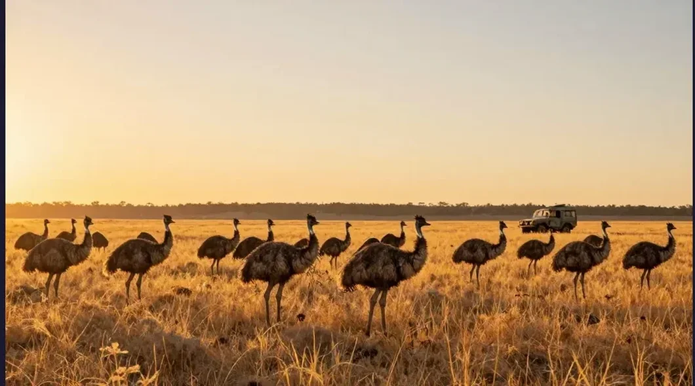
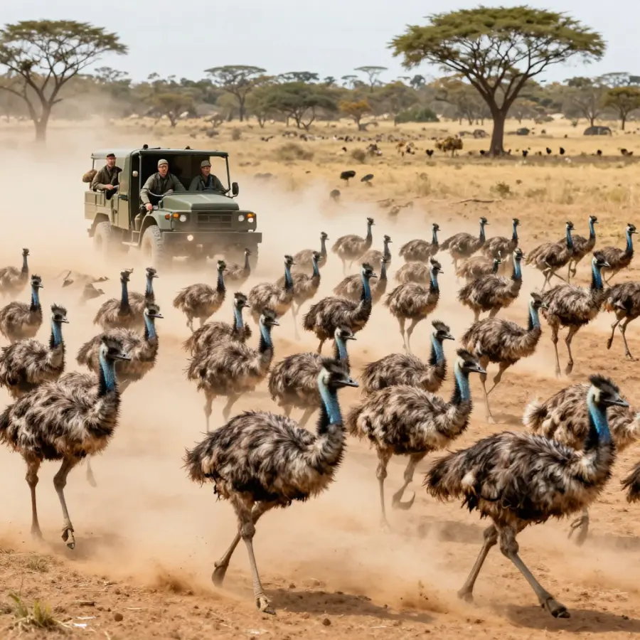
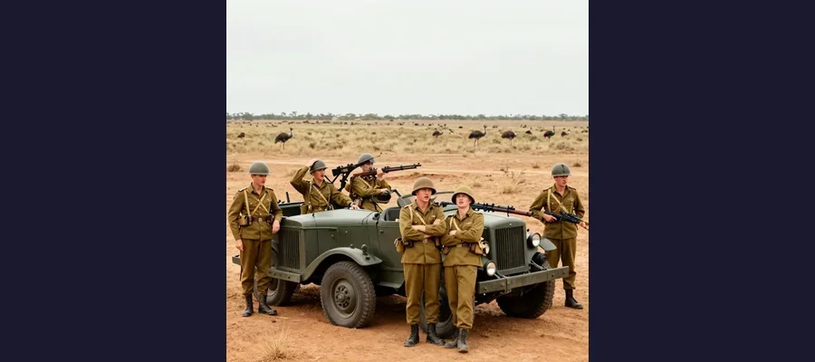

The Great Emu War: When Birds Defeated the Army!

The Australian military vs. 20,000 emus. Spoiler alert: the emus won.
What happens when you send soldiers with machine guns to fight birds? You'd expect the soldiers to win, right? Well, in 1932, Australia found out the hard way that birds don't play by the rules.
This is the true story of the Great Emu War - when the Australian military declared war on 20,000 emu birds... and lost.
Overview
Why Go to War With Birds?
After World War I, the Australian government gave land to soldiers who had fought in the war. These veterans became farmers in Western Australia. But they had a problem: emus.
Emus are large, flightless birds - the second largest birds in the world after ostriches. They're fast, tough, and hungry. In 1932, about 20,000 emus invaded the farmland, destroying crops and fences everywhere they went.
The farmers complained to the government. The government's solution? Send in the military with machine guns!

Emus can run at 50 km/h (31 mph) and are nearly impossible to hit!
🐦 Meet the Emu
Emus can grow up to 1.9 meters (6.2 feet) tall and weigh up to 60 kg (132 lbs). They can run at 50 km/h and are excellent swimmers. They also have thick feathers that can deflect bullets!
The Battle Begins
In November 1932, Major G.P.W. Meredith led three soldiers armed with Lewis machine guns and 10,000 rounds of ammunition. Their mission: destroy the emu army.
On the first day, the soldiers spotted a large group of emus and opened fire. The results were... disappointing. The birds scattered in every direction, running at incredible speeds. Most of them escaped.
The soldiers tried again and again. They set up ambushes. They chased emus in trucks. They even tried shooting from moving vehicles. But the emus were too fast, too smart, and too tough.
Evidence
Historical work on The Great Emu War is strongest when primary records, material traces, and later peer-reviewed analysis point in the same direction. This layered approach helps separate observations from retellings and reduces the risk of repeating popular but unsupported claims.
Emu Tactics
The emus turned out to be surprisingly good at military strategy:
- 🏃 They would split into smaller groups when fired upon
- 👀 They had "lookouts" who would warn the flock
- 🛡️ Their thick feathers deflected many bullets
- 💨 They could outrun the soldiers' trucks!
Major Meredith later reported: "These birds are like tanks. They can face machine guns with the invulnerability of tanks."

After weeks of fighting, the soldiers had fired thousands of rounds but barely made a dent in the emu population.
📊 The Final Score
After days of fighting, the military had used about 2,500 rounds of ammunition and killed only about 200-500 emus. That's less than 3% of the emu army. The birds won!
Competing Explanations
Competing explanations usually persist because each one fits part of the evidence while missing another part. Researchers test these models against chronology, physical constraints, and independent documentation to identify which interpretation requires the fewest assumptions.
Victory for the Birds
After weeks of embarrassing failure, the Australian government gave up. They withdrew the military and declared the operation a success (it wasn't). The farmers were still stuck with thousands of emus destroying their crops.
The government tried again later with a different approach: they offered a bounty for dead emus. This worked much better than machine guns, and local hunters eventually reduced the emu population.
Open Questions
Open questions remain because source quality is uneven across time: some records are direct and detailed, while others are fragmentary or second-hand. Future archival discoveries, improved imaging, and more precise dating methods may refine conclusions without overturning well-supported core findings.
The Legacy
Today, the Great Emu War is remembered as one of history's most ridiculous military campaigns. It proved that sometimes, nature wins no matter how many guns you have.
The emu is now a protected species in Australia - and appears on the Australian coat of arms alongside the kangaroo. Both animals were chosen because they "can only move forward, never backward." After the Emu War, the Australians probably wished they could move backward and forget the whole thing!
The Great Emu War remains proof that even the most powerful military can be defeated by determined birds!
References & Further Reading
Editorial note: We cross-check claims across multiple independent sources. See our Editorial Policy.